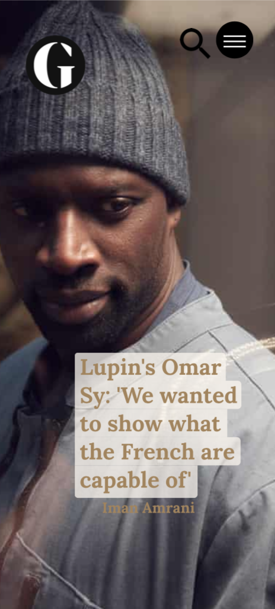
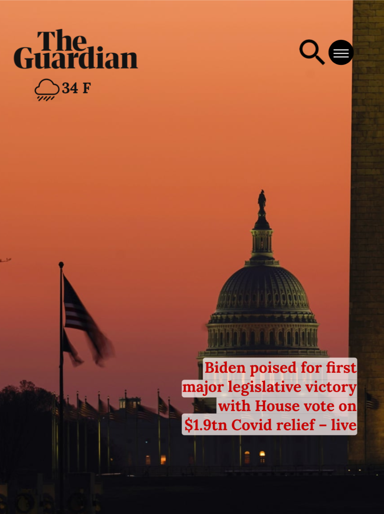
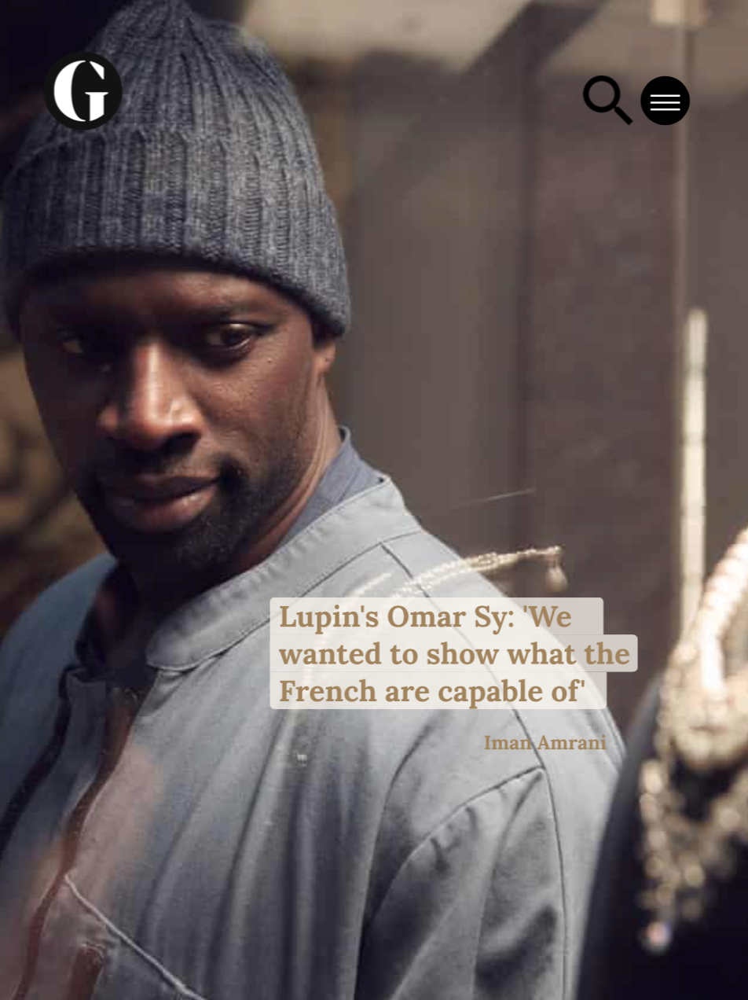
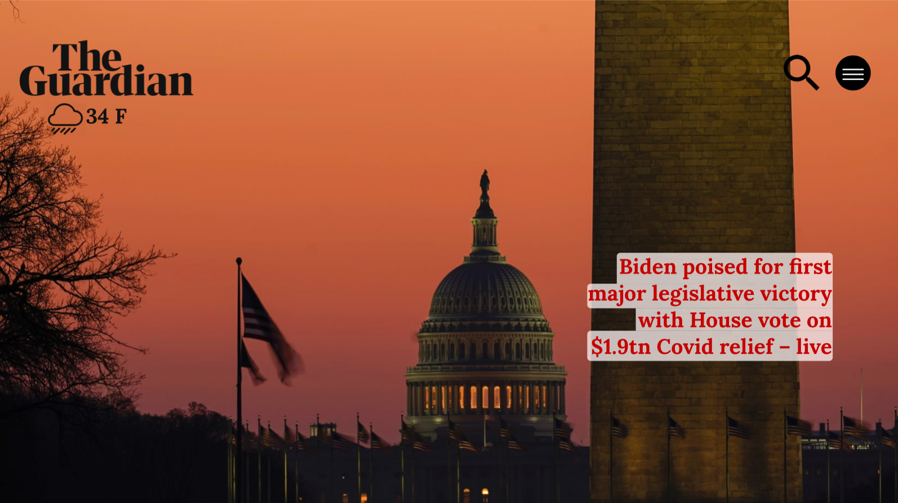
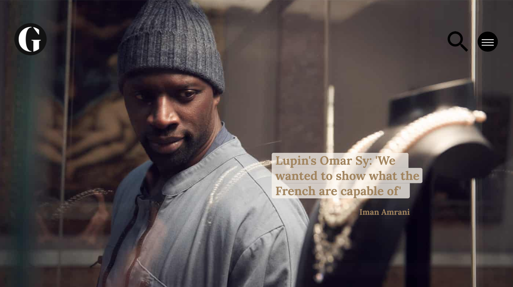
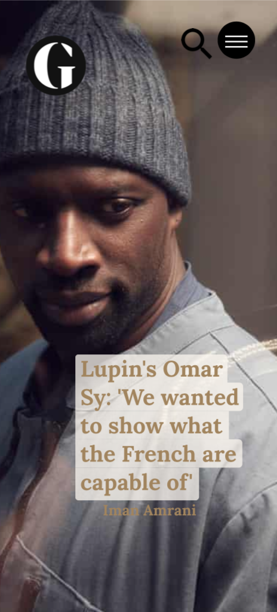
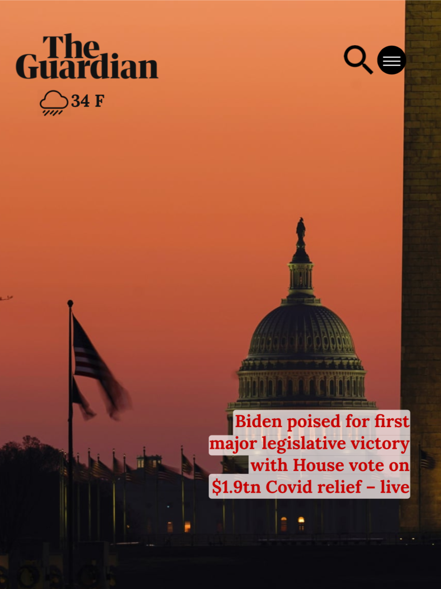
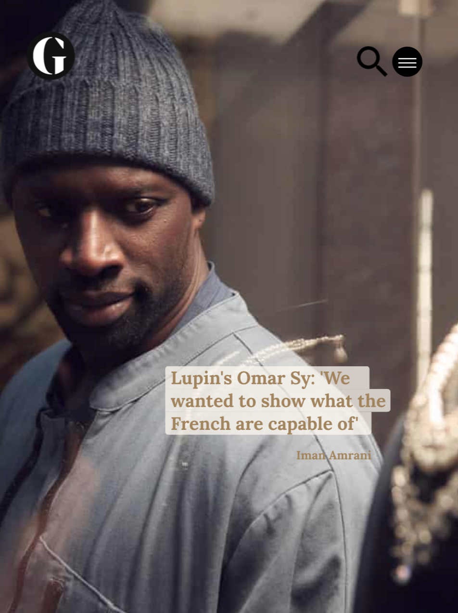
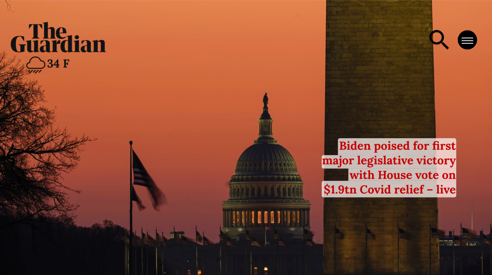
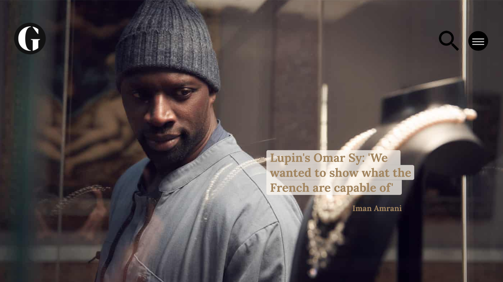

The Guardian
This is a full redesign of the Guardian. While it strays from the Guardians original and classic look, it takes on more of a editorial approach.
To download a presentation of my project, click here. 








